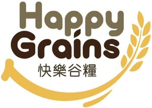

Trade Mark Journal No.2025/029 18 July 2025
WO0000001861704 (30,32)
Office of origin: Malaysia
Date of International Registration:7 March 2025
Date of designation in the UK:
7 March 2025

The mark contains the colours warm orange, chocolate brown and sage green.
- Class 30
- Coffee; cocoa; malt for human consumption; rice; honey; salt; mustard; vinegar; sauces [condiments]; spices; preparations made from cereals; bread, pastries and confectionery; processed grains; processed whole grains; sugar; biscuits; cookies; bread rolls; breadcrumbs; powders for making cakes; cakes; chocolate; chocolate beverages with milk; chocolate-based beverages; chocolate-based spreads; chocolate-coated nuts; cocoa beverages with milk; cocoa-based beverages; coffee beverages with milk; prepared coffee-based beverages; corn flakes; maize flakes; croissants; danish pastries; bread dough; cake dough; cookie dough; filled biscuits; filled cookies; ice cream; muesli; oat-based food; oatmeal; soya flour.
- Class 32
- Non-alcoholic beverages; rice-based beverages, other than milk substitutes; mineral and aerated waters; fruit drinks and fruit juices; syrups and other preparations for making beverages; soya-based beverages, other than milk substitutes; grain-based beverages, other than milk substitutes; non-alcoholic beverages flavoured with coffee.
HAPPY GRAINS HOLDINGS SDN BHD
Representative: LEE CHING YONG, NO.33-4 (1st FLOOR), JALAN ALI,, 84000 MUAR , JOHOR, MALAYSIA